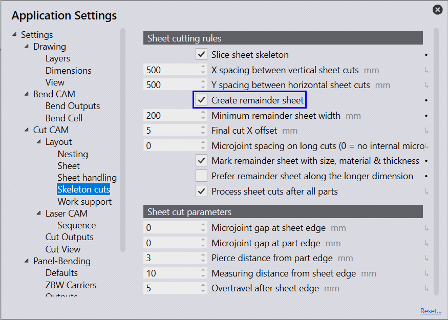

Remnant Sheets
| Select Automate remnant inventory management check box for JFY+ to automatically manage the remnant sheets in the inventory. |
JFY+ supports automated remnant sheet creation from a layout during nesting. This feature is available only with the Flux Cut machines. Open the factory → edit → flux settings → skeleton cuts settings page and select Create remainder sheet option to enable this feature. When enabled, the remaining area of a nested sheets is sliced into remainder sheets based on the assigned minimum remainder sheet width value.

These remnant sheets are captured by JFY+ while saving the nest results.
| Remnant sheets are sliced only along the X-axis (vertically). Irregular remnants are not applicable. |
The image below shows a layout with two remnants.
The dimensions of the remnant sheets are displayed on the layout information page.
When a layout or a job with remnant sheets is finished using the Mark Complete…, the remnants are added to the sheet inventory.
| When Automate remnant inventory management is not selected, the user has to interactively manage the remnant sheet state in the inventory. |
Click Adds to Remnants… to update the sheet inventory. The layout tile is decorated with a partially shaded square icon to display the updated remnant state.
Click Remove from Remnants… to remove the added remnant sheet from the inventory only if the sheets are not in use.
The newly created remnants can be viewed on the factory → sheets page by selecting the corresponding raw-material in the treeview. The remnant sheet derives the properties like grain, heat number, surface etc., from the parent sheet and these are read-only fields. The remnant sheet count derives the layout copies. Apart from these fields, the parent layout is also displayed for a remnant to help locate the remnant source.
To distinguish remnant sheets from standard sheets, the sheet size of remnant sheets are denoted with a as suffix along with the sheet tile being decorated with a light green border color.
Remnant Count search field has been added to the nest page, which can be used to filter all the layouts with the remainder sheets.
Types of Remnant Sheets
Primary Remnant - Remnant sheet sliced for the first time from a standard sheet.
Secondary Remnant - Remnant sheet sliced and created from an existing remnant sheet.
Remnant Sheets in Interactive Nesting (Manual sheet selection)
While running interactive nesting, it is possible to select the remnant sheets manually under Select Machine & Material.
Use the filter option to toggle between standards sheets and remnant sheets. Select the check box from the list of sheets and click next .
Remnant Sheet Priority in Auto-Interactive Nesting
While running interactive nesting, it is possible to select the remnant sheets automatically (without selecting checkbox) under Select Machine & Material.
Remnant Sheet Priority
Considering the remnant dimension that is practical for a job, JFY+ prioritizes a suitable remnant sheets from the inventory.
In case of remnant unavailability, standard sheet is prioritized.